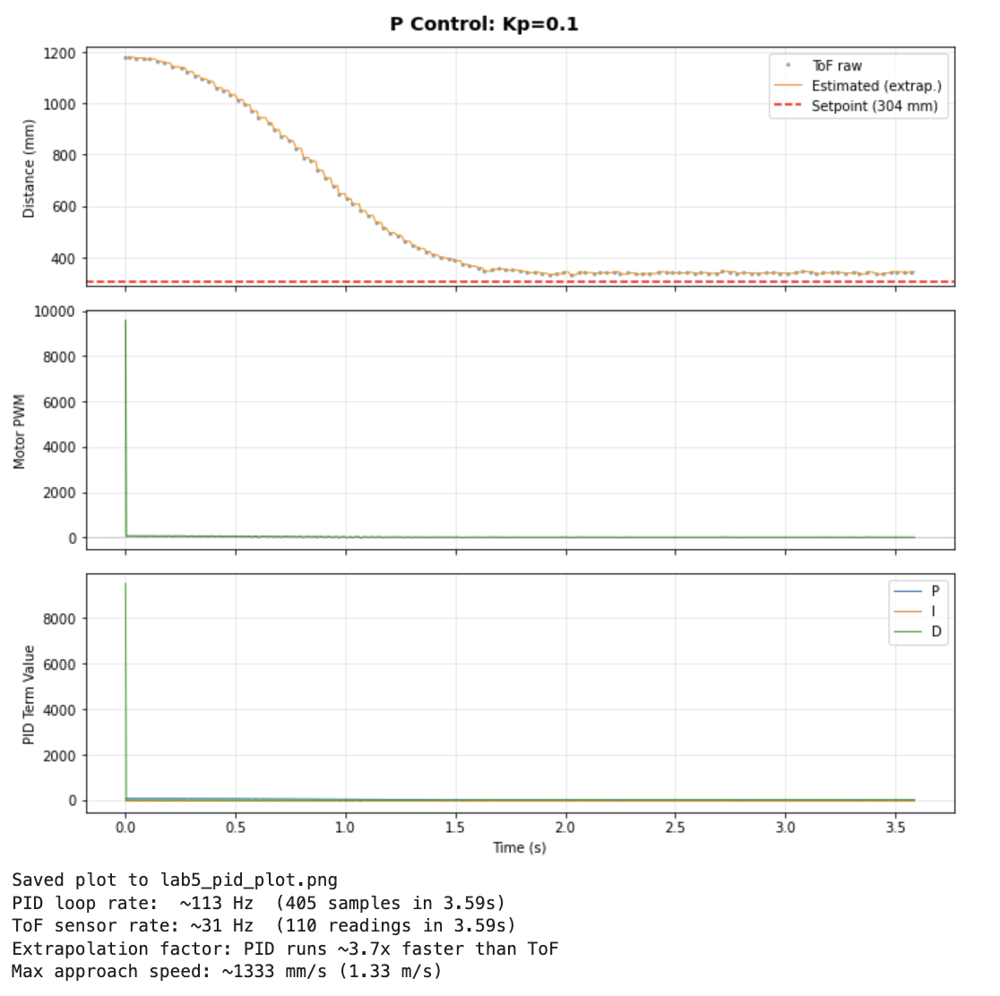
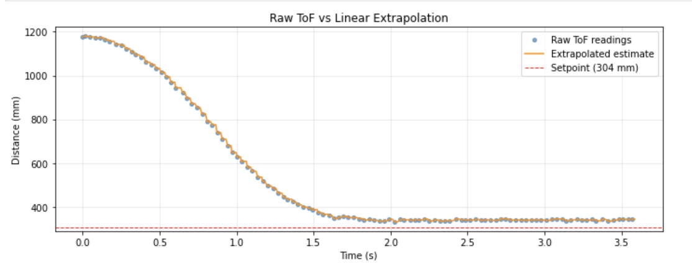

In this lab, the robot stops at exactly 304mm away from a wall driving full speed, using a PD controller with feedback from the ToF sensor. A linear extrapolation algorithm was also implemented to decouple the PD loop rate from the slower ToF sensor rate.
PID runs are triggered over BLE from a Python Jupyter notebook. The Artemis receives commands (start/stop, update gains, change setpoint) and transmits logged data after each run. Gains can be updated without reflashing.
Commands are parsed using the RobotCommand class, which I added to the existing ones on the yaml.
enum CommandTypes {
START_PID, // To begin timed PID run
STOP_PID, // Emergency stop as suggested I have
SEND_DATA, // To transmit logged arrays over BLE
SET_GAINS, // Update Kp, Ki, Kd while tuning on the run
SET_SETPOINT, // Change target distance (mm)
};Each PID loop iteration is logged to arrays on the Artemis. After the run, SEND_DATA streams each point as a pipe-delimited string over BLE.
log_time[i] = now - pid_start_time;
log_tof_raw[i] = raw_tof; // -1 if extrapolated
log_tof_est[i] = current_distance;
log_motor_out[i] = motor_cmd;
log_p_term[i] = p_term;
log_d_term[i] = d_term;A hard stop is implemented on the Artemis: motors cut after 6 seconds regardless of BLE state.
I used a PD controller. P-only caused overshoot of course, going past 304mm, so adding a D term dampened the approach, resisting rapid changes in error. No I term was needed since we're not really working with big distances, and integrator windup is a headache.
With a setpoint of 304mm and starting distance ~1000mm, the initial error is ~700mm. At Kp=0.07, that maps to a PWM of ~49 because that's as high as it would go without crashing into the wall. Kd=0.01 was chosen small enough to avoid derivative noise amplification, which constantly caused twitching at higher values.
Final gains: Kp = 0.07, Ki = 0.0, Kd = 0.01.
A deadband tolerance based on lab 4 was added to prevent the motor deadbanding at low PWM values:
if (abs(pid_error) < POSITION_TOLERANCE) {
stop_motors();
} else {
drive(motor_cmd);
}The VL53L1X was configured in long distance mode with a 33ms timing budget, giving ~31Hz sensor updates. Long mode was chosen to support starting distances up to 4m. The PID loop runs non-blocking at ~98Hz — about 3.2x faster than the sensor — which is what makes extrapolation useful.
Starting with P-only at Kp=0.1, the robot approached but overshot and oscillated. Adding Kd=0.01 dampened the overshoot. The derivative was kept small to avoid noise amplification — higher Kd values caused rapid twitching from sensor jitter. A low-pass filter on the derivative branch would allow higher Kd values in future iterations.

The maximum approach speed was approximately 1585 mm/s (1.59 m/s). The PID loop ran at ~98Hz while the ToF updated at ~31Hz, an extrapolation factor of 3.2×.
Five trials across different starting distances and two floor surfaces (tile and carpet):
Video: Five repeated trials from varying distances on tile and carpet. The robot consistently stops near 304mm and returns to setpoint when pushed.
Video: Robot returning to set point when lightly kicked (I hope you like my fuzzy socks).
The ToF sensor updates at ~31Hz but the PID loop runs at ~98Hz. Without extrapolation, the controller reuses stale data for most iterations. The extrapolator computes a slope from the last two readings and projects forward:
float slope = (float)(tof_reading_2 - tof_reading_1)
/ (float)(tof_time_2 - tof_time_1);
int estimated = tof_reading_2
+ (int)(slope * (float)(now - tof_time_2));This gives the controller a best-guess distance between sensor samples, allowing smoother and faster response without waiting for new data. The PID ran 3.2× faster than the sensor with extrapolation enabled.

Collaborations: AI was used to debug the code along the process. Past year's compared to track progress and decide on workflow.